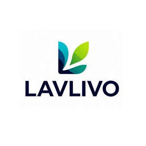

Trade Mark Journal No.2026/003 16 January 2026
UK00004316759 29 December 2025 (3,7,8,9,11,14,18,21,25,28)

- Class 3
- Cosmetic preparations for baths; Cotton sticks for cosmetic purposes; Beauty masks; Make-up preparations; Hair colorants; False eyelashes; Cosmetic preparations for eyelashes; Cosmetics; Cosmetic creams; Make-up; Lotions for cosmetic purposes; Eyebrow cosmetics; Shampoos; Perfumes; False nails; Cosmetic preparations for skin care; Shaving preparations; Eyebrow pencils; Rust removing preparations; Cosmetic preparations for slimming purposes.
- Class 7
- Meat choppers, electric / Meat mincers, electric; Agricultural machines; Dishwashers; Washing apparatus; Ironing machines; Darning machines; Washing machines [laundry]; Pasta making machines, electric; Beaters, electric; Knitting machines; Blenders, electric, for household purposes; Kitchen machines, electric; Food processors, electric; Vacuum cleaners; Kitchen grinders, electric; Juice extractors, electric; Steam mops; Cheese slicers, electric; Coffee grinders, other than hand-operated.
- Class 8
- Leather strops; Beard clippers; Knife steels; Sharpening steels; Scissors; Tweezers; Curling tongs; Table cutlery [knives, forks and spoons]; Cleavers; Razor strops; Pruning scissors; Hair-removing tweezers; Engraving needles; Vegetable choppers; Knives; Fingernail polishers, electric or non-electric; Hair clippers for personal use, electric and non-electric; Flat irons; Depilation appliances, electric and non-electric; Hair braiders, electric.
- Class 9
- Electric plugs; Cables, electric; Thermostats; Wires, electric; Audio- and video-receivers; Microphones; Mirrors [optics]; Batteries, electric; Computers; Pressure measuring apparatus; Locks, electric; Television apparatus; Remote control apparatus; Cash registers; Electric door bells; Telephone wires; Printers for use with computers; Scanners [data processing equipment]; Answering machines; Sunglasses.
- Class 11
- Air-conditioning installations; Bath tubs for sitz baths; Bath installations; Heating apparatus, electric; Hair dryers; Air-conditioning apparatus; Cooking utensils, electric; Cooking stoves; Lighting apparatus and installations; Toasters; Grills [cooking appliances]; Kitchen ranges [ovens]; Faucets; Sanitary installations and apparatus; Water dispensers; Coffee machines, electric; Refrigerators; Kettles, electric; Electric fans for personal use; Microwave ovens [cooking apparatus].
- Class 14
- Clock hands; Amulets [jewellery]; Silver thread [jewelry]; Clocks; Pendulums [clock- and watchmaking]; Bracelets [jewellery]; Bracelets [jewelry]; Wristwatches; Straps for wristwatches; Dials [clock- and watchmaking]; Sundials; Necklaces [jewellery]; Clocks and watches, electric; Atomic clocks; Watches; Alarm clocks; Rings [jewelry]; Stopwatches; Jewelry boxes; Watch hands.
- Class 18
- Bags; Leather leashes; School bags; School satchels; Card cases [notecases]; Muzzles; Travelling trunks; Leather straps; Leather thongs; Umbrellas; Sling bags for carrying infants; Knee-pads for horses; Pocket wallets; Wheeled shopping bags; Handbags; Suitcases; Trunks [luggage]; Haversacks; Garment bags for travel; Sport bags.
- Class 21
- Glass flasks [containers]; Cooking pot sets; Ceramics for household purposes; Crystal [glassware]; Spice sets; Earthenware; Utensils for household purposes; Opal glass; Porcelain ware; Tableware, other than knives, forks and spoons; Painted glassware; Works of art of porcelain, ceramic, earthenware, terra-cotta or glass; Trays for household purposes; Pitchers; Kitchen utensils; Flasks; Cups of paper or plastic; Lunch boxes; Valet trays [receptacles for small objects] for household purposes; Meat grinders, non-electric.
- Class 25
- Footwear; Stockings; Boots; Half-boots; Braces for clothing [suspenders]; Lace boots; Collars [clothing]; Skull caps; Bodices [lingerie]; Underwear; Clothing; Football shoes; Girdles; Dresses; Sandals; Brassieres; Togas; Bath robes; Shoes; Heels.
- Class 28
- Toys; Machines for physical exercises; Body-building apparatus; Body-training apparatus; Novelty toys for parties; Toy pistols; Scooters [toys]; Appliances for gymnastics; Toy vehicles; Remote-controlled toy vehicles; Stuffed toys; Toy figures; Masks [playthings]; Drones [toys]; Toy robots; Toy dough; Playhouses for children; Toy glow stick bracelets for parties; Toy musical instruments; Balance bicycles [toys].
GUANGZHOU LODO TRADING CO., LTD.
Representative: Greg Sach